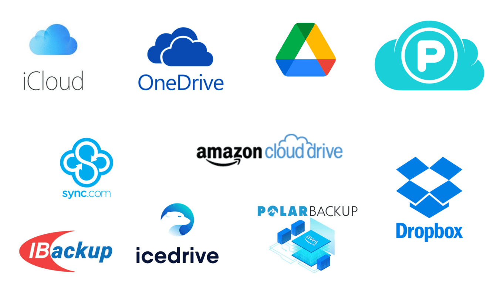
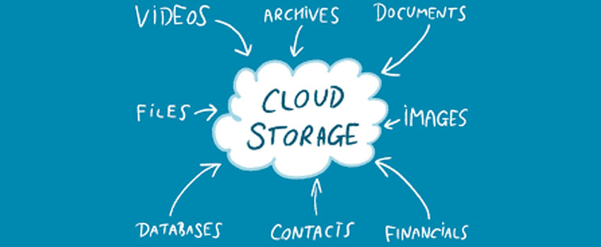
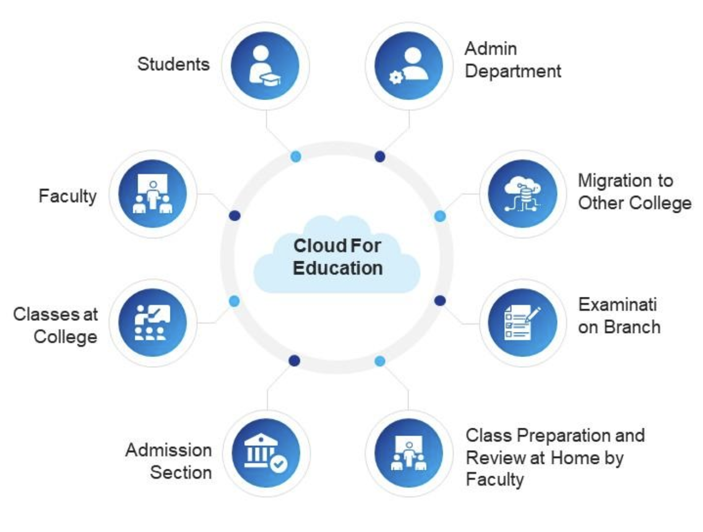
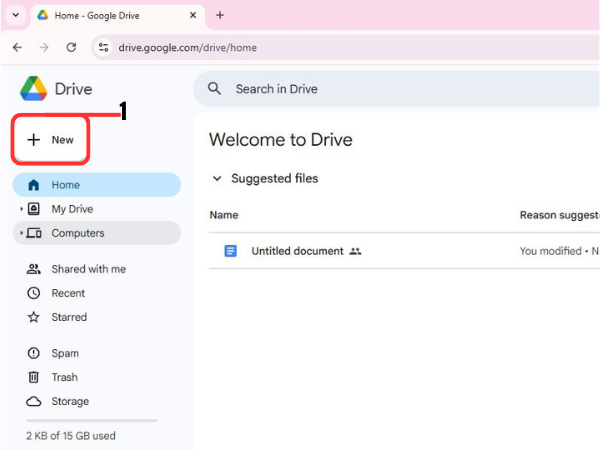
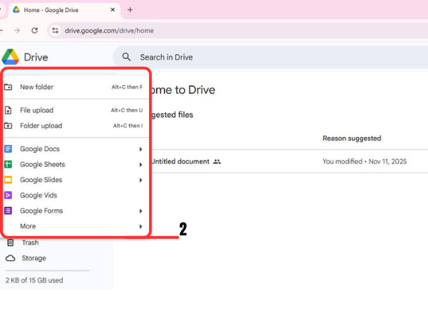
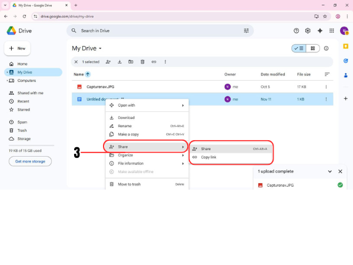

Cloud storage is a service that stores data on remote servers accessed over the internet, rather than on a local computer or hard drive. When we upload a file to a cloud-based server like Google Drive, OneDrive, or iCloud, that file gets copied over the Internet into a data server that is cloud based physical space where companies store files on multiple hard drives. Most companies have hundreds of these servers known as 'server farms' spanning across multiple locations.
Examples for Cloud Storage Services
These are the common cloud storage services
These services usually give some free storage and can get more space for payment.
You can store almost any type of digital file
Documents (Word, PDF, PPTx)
Photos and images
Videos
Audio files
Spreadsheets and project files

What can do with cloud storage
You can upload documents, images, videos and other files from your device to the cloud. You can download them anytime when you need.
You can log into your cloud account from any computer, phone or tablet.You need to remember your login details. Your files stay available as long as you have an internet connection.
Share files or folders using a link.
You can set permissions For:
| View Only
| Comment Only
| Edit Access
Multiple people can work on the same document at the same time. Useful for group projects and assignments. Changes update instantly for everyone.
If syncing is enabled, your files update across all your devices.
Example : If you edit a Word file on your laptop, the updated version appears on your phone/tablet too.
You can organize files into folders, rename them and delete unwanted items.You can check how much free storage you have left.
Files in the cloud are safe even if your device is lost, damaged or stolen. Some services allow restoring older versions of a file.

Access assignments from home, lab or mobile
No need to carry USB drives everywhere
Easy to submit work by sharing a link
Group members can work on the same file together
Go to drive.google.com
Sign in with your Google account
Click "New" → "File upload"
Select a file to upload
Right click the file → "Share" to send to others



Use a strong password for your cloud account
Turn on Two-Factor Authentication (2FA) if possible
Don’t share your login details
When sharing, use View only if others don’t need to edit
Remove access if you no longer want others to see a file
1.Block-Based Storage System
Hard drives are the block-based storage systems. Your operating system, like Windows or Linux actually sees a hard disk drive. So, it sees drive on which you can create a volume, and then you can partition that volume and format them. For example If system has 1000 GB of volume, then we can partition it into 800 GB and 200 GB for local C and local D drives respectively. Remember with a block based storage system, your computer would see a drive, and you can create volumes and partitions.
2.File-Based Storage System
Connecting through a Network Interface Card (NIC) allows access to network-attached storage (NAS) devices, which are file-based storage systems. These servers come equipped with formatted partitions and file systems, enabling users to map drives to network locations without needing to format or partition anything themselves. As a result, the operating system identifies the network-based file system as a local drive.
3.Object-Based Storage System
Object Storage is a system where you upload data, called an object into a large, flat area called a container or bucket. Unlike traditional file systems, there are no folders or hierarchies, every object sits on the same level. Users interact with this storage directly over the internet using standard HTTP protocols and APIs (for example: GET, PUT, POST, SELECT, DELETE) This method is highly scalable and perfect for storing massive amounts of unstructured data like backups, photos and media libraries, which are easily accessed via a unique web address.